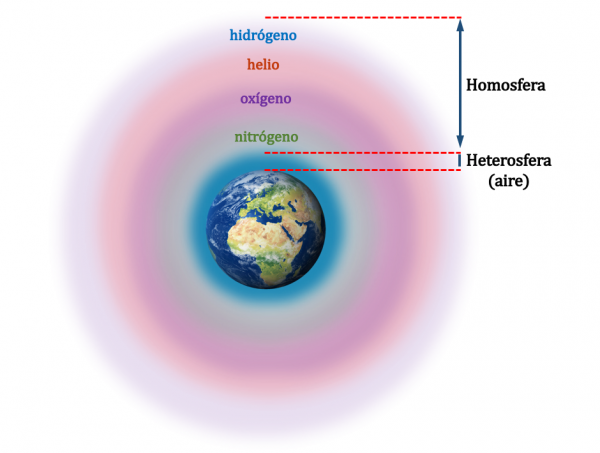

Una proteína se forma cuando una serie de aminoácidos se unen por medio de enlaces químicos. El arreglo de los aminoácidos en una proteína puede ser descrito a tres diferentes niveles: las estructuras primaria, secundaria y terciaria.
La estructura primaria es simplemente el orden específico en que los aminoácidos se unen para formar un péptido. Este orden está determinado por la secuencia del ADN del gen que codifica la síntesis de un péptido o proteína en particular.
La estructura secundaria de una proteína describe la forma en que una secuencia de aminoácidos se pliega o enrolla. Las diferentes interacciones y enlaces químicos entre los aminoácidos de un mismo péptido determinan si la cadena tiende a enrollarse o a plegarse (o ambas).
Finalmente, la estructura terciaria de una proteína describe la forma general o configuración tridimensional de una proteína. Esta forma o configuración determina finalmente la función específica de una proteína.
Los aminoácidos son compuestos sólidos, cristalinos, que presentan un punto de fusión y una solubilidad en agua muy superiores a lo que cabría esperar dado su peso molecular. Ello se debe a que los aminoácidos existen en disolución, y cristalizan a partir de las disoluciones.

El nitrógeno
se encuentra principalmente en la atmósfera cuando dos átomos del elemento se unen para formar el llamado dinitrógeno o nitrógeno molecular, un gas incoloro, inodoro e insípido de fórmula N2, donde constituye el 78.1 % en volumen.
Descripción generada automáticamenteSu abundancia en la corteza terrestre es sólo del 0,002% en masa. Los únicos minerales importantes que contienen nitrógeno son el KNO3 (nitro o salitre) y el NaNO3 (nitrato de sodio o nitrato de Chile), localizados en unas pocas regiones desérticas.
Descripción generada automáticamente con confianza mediaOtras fuentes naturales que contienen nitrógeno son las proteínas de plantas: Las plantas pueden absorber el nitrato del suelo y descomponerlo en el nitrógeno que necesitan, mientras que las bacterias desnitrificantes convierten el exceso de nitrato nuevamente en nitrógeno inorgánico que se libera a la atmósfera

Colocar aquí el contenido para id "videin"